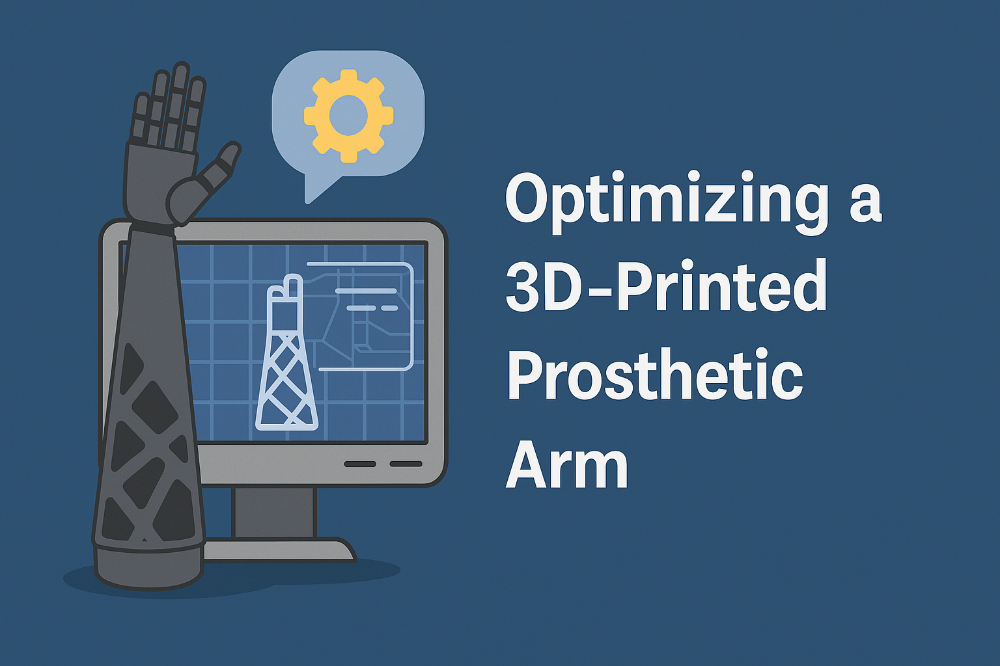
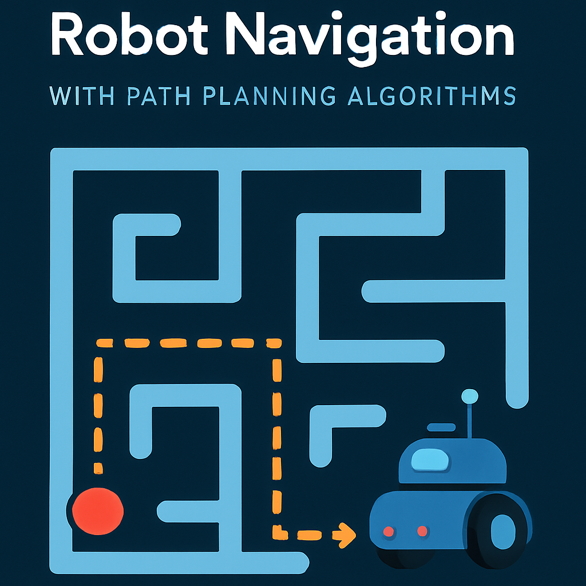

📁 Projects

Sales Playbook Optimization with Machine Learning
Improved sales targeting by building predictive models and interactive dashboards for deal outcomes.
View Project
Economic Freedom and Global Well-Being
Analyzed the connection between economic freedom and societal outcomes using PCA and clustering.
View Project
Operational Cost Optimization with Nissan
Collaborated with Nissan North America to identify cost-saving opportunities in logistics and packaging.
View Project
North Carolina Voter Database System
Built a full-scale relational database from raw voter data with normalization, stored procedures, triggers, and front-end integration.
View Project⚙️ Engineering & Physical Systems Projects

Optimizing a Lightweight 3D-Printed Prosthetic Arm
Led the development of a low-cost, durable prosthetic arm using carbon fiber and generative design. Simulated mechanical behavior in Fusion 360 to reduce material weight while retaining strength—tailored for growing children and older adults.
View Project
Obstacle Avoidance with a ROS-Simulated Mobile Robot
Designed and simulated a two-wheeled robot using ROS and Gazebo that autonomously navigates and avoids obstacles using the Bug2 algorithm, SLAM, and LIDAR-based mapping.
View ProjectStabilizing a Tumbling Satellite Using Control Wheel Dynamics
Designed and simulated a novel MATLAB-based control system to reduce tumbling in satellites by aligning angular momentum using momentum wheels and Lyapunov stability theory.
View Project